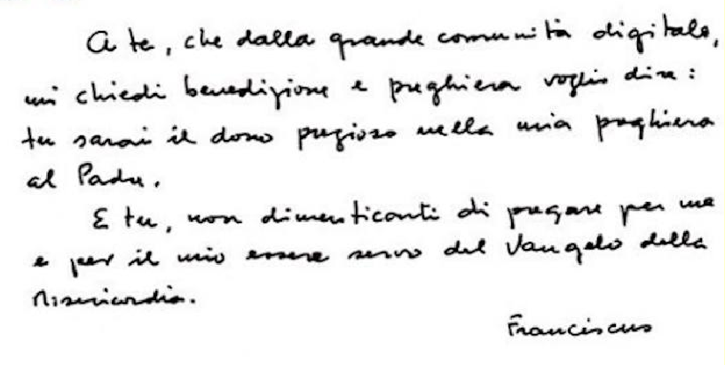

PERCHÉ QUESTA ANALISI?
Con Francesco se ne è andato un leader di statura mondiale, seppur di tipo morale.
Era un uomo di pace, in un’epoca di guerra, era un uomo che era dalla parte “degli ultimi” e del “sud del mondo” e che ha saputo dire nel qui ed ora :"senza disarmo non c' è pace".
Dal mio punto di vista personale, con lui è venuta meno una “diga morale”: è una grave perdita.
Il tutto non può lasciarci indifferenti e suscita anche temi di interesse grafologico e di interesse più generale.
Da grafologo, riscontro nella sua grafia una statura culturale, morale, politica ed umana di grandissimo livello, che nulla ha che vedere con quella dei “leader” di oggi, sia mondiali sia locali.
La sua grafia mi ricorda quella di due grandi italiani del recente passato: Aldo Moro ed Enrico Berlinguer. Due uomini che, pur volendolo, non hanno potuto incontrarsi: che ne sarebbe potuto derivare?
Che ne sarebbe derivato dalla sperimentazione concreta sul campo delle “parallele convergenti”, dell’uno, e del “compromesso storico”, dell’altro? Non abbiamo potuto saperlo, ma l’oggi è il frutto di quel mancato incontro ...
Questi uomini erano guidati dalla fede in ideali che sapevano coniugare visione politica, giustizia sociale e visione del mondo.
A ciò Francesco aggiungeva la dimensione umana, ossia l’uomo, seppur con l’occhio e la sensibilità di un leader morale di tipo religioso, seppur, ancora, con le ombre che un occhio laico intravede.
Ecco, lo dico da un uomo che è rimasto orgogliosamente fedele alle idee che aveva in gioventù: secondo me, è arrivato il momento in cui alla visione etica di tipo socio – politico si coniughi una visione dell’uomo, seppur laica: me lo ha insegnato la grafologia.
Va rivisto e va riempito di contenuti più autentici ed umani il concetto dell’uguaglianza, seppur fermi i principi che hanno guidato tanti di noi negli anni della gioventù.
Insomma, Francesco interroga la nostra coscienza, anche quella dei laici, quale io sono. La sua scrittura ci insegna..
LA GRAFIA DI FRANCESCO. UN GIGANTE CON I PIEDI DI ARGILLA?
Un gesuita che si è voluto chiamare Francesco? Come si spiega questa scelta che a molti di noi potrebbe apparire incomprensibile?
Viene naturale chiamarlo Francesco invece che “Papa Francesco”, perché ce lo suggerisce la sua scrittura: osservate la semplicità della firma (la firma è l’ideale dell’Io)!
Tale semplicità, conoscendo la scelta di cui sopra, ci suggerisce l’umiltà del “fraticello minore di Assisi”?
Suppongo di sì, ma non ho la cultura specifica per sorreggere questa deduzione.
Aveva gli strumenti intellettivi (spiccano il Disuguale metodico, la Triplice larghezza e tanto altro ancora, ad iniziare da Minuta e da un buon ritmo e dalla tendenza ad Accurata spontanea, con il tutto che suggerisce un corredo intellettivo di altissimo rilievo) che siamo portati ad immaginare in un gesuita, ma non aveva il piglio dell’educatore classico, proprio di quest’ultimo.
Da dire che il suo corredo intellettivo, basato sull'osservazione, sull’approfondimento, sulla ricchezza intuitiva, sulla curiosità dello stesso tipo, sull’elaborazione personalizzata, con alta probabilità lo avrebbe potuto fare incorrere nell’orgoglio intellettivo (se a Minuta + Disuguale metodico si fossero associati Accurata e Dritta di alto grado, ad esempio).
Lottava, tuttavia, contro ogni forma di orgoglio (Calibro piccolo + tendenza ad Accurata spontanea, buona Larghetta tra lettere), anche se è impossibile che ne fosse completamente immune. Nel caso, comunque, nelle pause introspettive (delle quali aveva bisogno, come l’ossigeno), si giudica con molta severità (Non omogenea del Calibro + Minuziosa), con forti sentimenti di colpa (stessi segni).
Fatto sta che spesso dubitava persino della sua intelligenza, oltre che della sua forza.
Si percepiva più un compagno del cammino, che aveva l’onere (calibro piccolo + i segni dell’insicurezza) di testimoniare l’esempio, più che la parola e il precetto, oserei dire (chiedo scusa del possibile sconfinamento in temi che richiedono il massimo rispetto).
Al tutto associava anche il concetto del servizio (Largo tra lettere, tendenza all'accuratezza di tipo spontaneo, con l’insieme che è confermato dagli ideali di tipo religioso ribaditi dalla firma e dalla scelta del nome). Insomma, oltre all’obbligo di dare l’esempio percepiva anche l’obbligo del servire.
Fatto sta che la firma di Francesco ci suggerisce che egli aveva una modesta concezione di sé. Si percepiva un uomo umile, di scarso valore (non solo il calibro piccolo, ma spiccano molti segni che indicano insicurezza. Anche i segni della grafica simbolizzata confermano).
Era insicuro (Titubante, Calibro piccolo, Tentennante, Spadiforme, Non omogena del calibro, Minuziosa e Minuta), oltretutto, ma aveva un’organizzazione che cercava di non far trasparire la propria dubbiosità (movimento sinistra destra, tendente a Veloce, Accurata tendente allo spontanea).
Insomma, era un introverso, ma aveva un modo di proporsi che talora si basava su un’apparente estroversione associata ad affabilità e generosità di comportamento e di opere anche. Tale autoproposizione, se, da una parte, rispondeva a un sentire autentico basato sui bisogni di dare l’esempio e del servire prima detto, dall'altra, era funzionale a schivare le possibile interazioni che gli potevano ingenerare ansia e nervosismo. In effetti, difettava un po’ nella calma ed era soggetto a sbotti compensativi, dei quali poi si pentiva.
Non era ambizioso, di per sé, perché non si percepiva all'altezza di grandi compiti di responsabilità
Ma allora come si spiega il fatto che ha ricoperto ovunque, anche nel suo paese e nell'ambito del proprio ordine religioso, incarichi di responsabilità?
E’ persino diventato papa: come ha potuto accettare tali incarichi, gravosi in sé, figuriamoci per una persona che non aveva un’alta stima di sé.
Chissà, potrei dire, che il carisma dei Gesuiti impone l’assunzione delle responsabilità, ma molti potrebbero obiettare più di un argomento avversativo, alcuni dei quali fondati (non ho i titoli per parlare del carisma, ad esempio).
Allora, come spiegare? Con la fede, suppongo. Con il concetto di “affidarsi al disegno del Padre”, ecc... Altrimenti, come lo si potrebbe spiegare?
Insomma, la grafologia mi autorizza a sostenere egli non ha brigato per ottenere promozioni e che anzi, se fosse dipeso da lui, avrebbe rinunciato a tali incarichi.
E’ vero, sa rendersi simpatico, ma solo ad alcuni, per la sua schiettezza, per i modi informali, talora semplici ed amicali, ecc.. Ma è anche un uomo divisivo e ce lo spiegano i suoi segni grafologi, più che la cronaca.
Pur essendo tendenzialmente cautelato (segni insicurezza + calibro piccolo), però, quando, suppone di aver ragione (magari dopo aver pregato e chiesto ispirazione – altrimenti non si spiegherebbe, segni grafologici alla mano), nelle scelte contingenti potrebbe essere anche tattico (se può schiva gli scontri e gli attriti, come detto), ma è un uomo che persegue un disegno e sullo stesso non accetta compromessi.
E’ un uomo che non può essere valutato in maniera disgiunta dalle sue idee e dal modo come intende il suo Ministero e la concezione dell’Uomo voluta dalle Scritture (suppongo): i segni grafologici ci dicono che potrebbe avvertirsi strumento di una volontà superiore (un disegno), che andrebbe scritta con la maiuscola e in carattere cubitali.
Paradossalmente, potrebbe avvertire anche i suoi limiti soggettivi (come detto eccede nell'autocritica) come parte di tale strumento e di tale disegno. Non gli resta altro che servire, per l’appunto come detto.
Di conseguenza, quando sono coinvolti temi e scelte che egli reputava fondativi del proprio ministero e della sua idea di Chiesa, emergono la sua schiettezza, l’intolleranza ai compromessi, alla perdita di tempo, ai privilegi, ecc.., ecc..
Insomma, sa farsi molti nemici, ce lo spiegano i suoi segni, più che la cronaca.
E’ un uomo del quale sentiremo la mancanza: grazie Francesco..
L’AVANTI – DIETRO
Da qui a proseguire sono nel campo della grafica simbolizzata.
Si può essere ben superiori a ciò che i propri limiti soggettivi indicherebbero?
Insomma, Francesco era un insicuro, un dubbioso ecc., ma chi se ne è accorto?
Lo abbiamo percepito come un gigante. Perché?
Francesco e gli uomini come lui ci invitano a guardare il cielo, a misurarsi con l’alto e ad aver fiducia in lui e nel suo disegno. Perseguono il nobile obiettivo di indicare la diritta via a coloro che camminano sul rigo del suolo (il luogo della sinistra destra individuato da Pulver), in un contesto Controriformato, nel quale il destino ultimo dell’uomo (quando giungerà a fine rigo, ossia quando il suo cammino terminerà inesorabilmente e per il sempre) è nelle sue mani, nelle sue intenzioni, nell'amore per il prossimo e nelle opere di bene che cerca di perseguire. E nell’affidarsi al Padre e al destino che Lui avrebbe scelto per ognuno di noi.
Cosa ci insegna Francesco, invece, se lo studiamo con occhi laici?
Credo che sia possibile sostenere che la fede laicamente intesa, ossia la luce nel credere in un ideale da spendere per fare progredire l’Uomo e l’umanità, sia lo strumento che chiunque possa acquisire, anche ai fini di un’idealità che non si misura direttamente con il trascendente, rispetto al quale tuttavia chiunque deve il massimo rispetto.
Esiste, infatti, un livello spirituale di tipo immanente, che si basa sull’avanti dietro, una via simbolica individuata dalla grafica simbolizzata.
Siamo tutti alla ricerca di senso, di un senso che ci obbliga a chiederci quale sia il fine che dovremmo perseguire, per non sciupare il dono che abbiamo ricevuto: quello della vita.
Esiste un ideale laico che guarda alle generazioni future e a ciò che ognuno di noi lascerà loro in eredità (ecco il senso dell’avanti – dietro). Ecco, per l’appunto, ognuno può, con gli strumenti che ha, cercare di dare il meglio che è nelle sue mani, per chi verrà dopo di lui. Si tratta di un altro modo di pensare l’eternità dell’esistere, sia nei geni (per coloro che hanno nipoti) sia nelle opere e nelle azioni, ecc..
Inoltre, l'altro aspetto che emerge è che non esiste contraddizione tra alcuni aspetti dell'ideale come quello perseguito dal "francescano" Francesco. e quelli che tra noi lottano per un concetto di umanità basato sulla pace, l'uguaglianza, il progresso, ecc..
Se non altro, perché ce lo hanno insegnato i due uomini del secolo scorso (ma ce ne siamo dimenticati) che ho citato in precedenza...
Ogni parte è parte, per l'appunto, non ha tutta la ragione in tasca.
In ultimo, invito la grafologia (soprattutto quella fondata dal Francescano Moretti) a considerare che il nostro modello calligrafico corsivo è, come detto, Controriformato: trovo paradossale che di questi temi ne parli solo io, un laico, per l’appunto.
Guido Angeloni